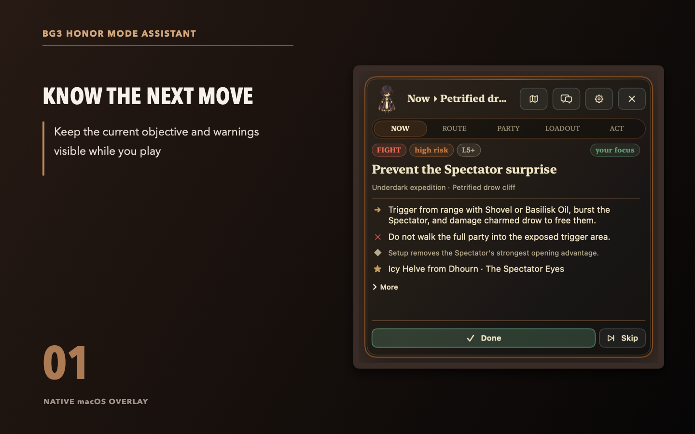

See what matters now
The Now view keeps the recommendation, risk, outcome to avoid, and relevant equipment in one compact panel.
Native macOS overlay
Your next objective, route dependencies, party builds, and equipment plan stay beside the game. You record what happened. The app keeps the plan current.

The Now view keeps the recommendation, risk, outcome to avoid, and relevant equipment in one compact panel.
Dependencies and missed decisions stay attached to the run instead of disappearing into browser tabs.
Track current levels, ability recipes, equipment ownership, and contested items across the active party.
Current guide coverage
Act 2 currently has equipment and a public map handoff, but its route is not available yet. The app never reads saves, game memory, or input. Progress changes only when you record it.